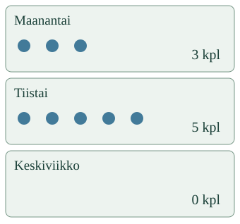

<link rel="stylesheet" href="lesson.css">


<section data-teaching-step="1" data-lesson-role="teaching-step">
<p class="lesson-intro"> Yhdestä merkinnästä ei vielä näe eri päivien tilannetta.</p>
<h2>Merkinnöistä aineistoksi</h2><p><strong>Kokoan saman kysymyksen havainnot yhteen.</strong> Säilytän päivän, arvon, yksikön ja tiedon siitä, miten havainto tehtiin.</p>
<p>Tässä käytetään annettuja kuvitteellisia mallimerkintöjä. Ne eivät ole sinun luonnosta tekemiäsi havaintoja.</p>
</section>


<section data-teaching-step="2" data-lesson-role="teaching-step">
<h3>Päivä kuuluu arvoon</h3><p>Maanantain merkintä on 3, tiistain 5. Jos luvut vaihtuvat päivien välillä, aineisto kertoo eri asian. Taulukon rivijärjestyksen saa vaihtaa, kun päivän tiedot pysyvät yhdessä.</p>
<figure data-lesson-role="worked-example"></figure>
</section>


<section data-teaching-step="3" data-lesson-role="teaching-step">
<div data-dataset-lab><p>Ilman harjoitusta: tee taulukkoon päivä- ja määrä-sarakkeet. Siirrä jokainen yllä oleva mallimerkintä omalle rivilleen. Säilytä myös havaintopaikka ja laskutapa.</p></div>
</section>


<section data-teaching-step="4" data-lesson-role="teaching-step">
<h3>Nolla ja puuttuva tieto</h3><p>Keskiviikon 0 tarkoittaa, ettei katseluhetkellä näkynyt yhtään sammakkoa. Jos taimen pituutta ei mitattu, arvoa ei muuteta nollaksi. Valitse silloin puuttuva tieto.</p>
</section>


<section data-teaching-step="5" data-lesson-role="teaching-step">
<p data-lesson-role="question"><strong>Mieti:</strong> jos sama luku esiintyy kahtena päivänä, tarvitaanko molemmat rivit?</p>
<details data-lesson-role="hint"><summary>Apua</summary><p>Valitse yksi lähdemerkintä kerrallaan. Etsi sen päivä ja siirrä arvo samalle riville. Tarkista yksikkö otsikosta. Tyhjä solu on vielä vastaamatta; se ei tarkoita nollaa.</p></details>
</section>


<section data-teaching-step="6" data-lesson-role="teaching-step">
<details data-lesson-role="teaching-step"><summary>Uusi tilanne ja lisäpohdinta</summary><p>Kokoa saman taimen annetut senttimetrimerkinnät valinnassa <strong>Uusi tilanne: taimen pituus</strong>. Merkitse myös mittaamatta jäänyt päivä.</p><p>Eri päivinä saatetaan nähdä samoja sammakoita. Päivien lukujen summa ei siis kerro, montako eri sammakkoa lammessa elää. Aineisto ei myöskään yksin kerro syytä muutokselle.</p></details>
</section>


<details data-lesson-role="teacher-note"><summary>Aikuiselle ja ilman ruutua</summary><p>Vuosiluokat3–6, kanoninen prosessirooli. Vaadittu esitieto on SCI-ENV-RECORD-01; SCI-ENV-MEAS-01 on vahva tuki, ei uusi pakkoportti. Mittaustulokset on annettu, eikä niiden tuottamista tai välineen käsittelyä arvioida. Oppija kokoaa useiden päivien merkinnät tunnistettaviksi riveiksi; kyse ei ole pelkän oikean taulukon valinnasta.</p><p>Rivien tunnisteet säilyttävät päivät ja yksikön. Sama arvo eri päivinä on sallittu. Tarkistus vertaa annettuihin lähteisiin eikä täydennä puuttuvaa arvoa salaa. Rivejä saa järjestää muuttamatta tietoja. Ei henkilötietoja, oikeita käyttäjähavaintoja, ulkoista tallennusta tai hallintopäätelmiä.</p><p>Oma pieni tutkimus: sopikaa ensin kysymys, havaintopaikka, ajankohta ja toistettava tapa. Kerätkää turvallisesti tiedot ilman eläinten häiritsemistä. Merkitkää yksikkö ja puuttuva havainto rehellisesti. Annettujen malliarvojen kokoaminen ei osoita itsenäistä kenttätyötä, luotettavaa otantaa tai oppimisvaikutusta.</p></details>


<section data-teaching-step="7" data-lesson-role="teaching-step">
<p data-lesson-role="question"><strong>Lopuksi:</strong> mitä tietoa pelkän lukujonon mukana pitää säilyttää?</p>
</section>


